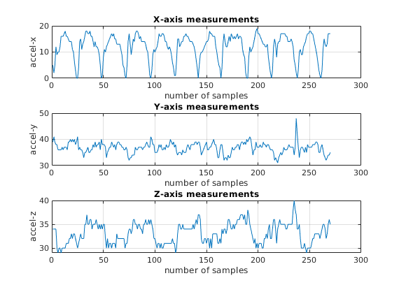
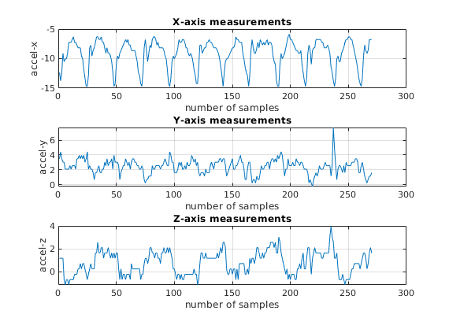
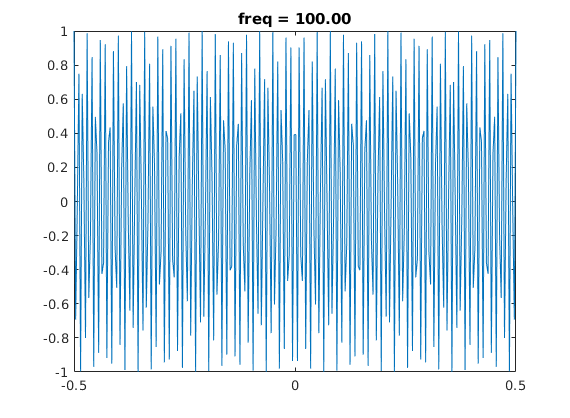

Contents
data = load("../HMP_Dataset/Climb_stairs/Accelerometer-2011-03-24-10-24-39-climb_stairs-f1.txt");
Data loaded and now we define a function for conversion and apply it to
the data
x = data(:,1); y = data(:,2); z = data(:,3); plot_data(x,y,z,'Before conversion'); x = convert(data(:,1)); y = convert(data(:,2)); z = convert(data(:,3)); plot_data(x,y,z,'After conversion'); 
Next is to set up the sampling
need a cosine signal cos(2pift)
t = linspace(-.5,.5,length(x)); c = (@(f,t) cos(2*pi*f*t)); figure % this plot shows the cos using the first 100 frequencies %figure(Visible="on",Name='custom cos') for i = 1:1e2 plot(t,c(i,t)); plot_title = sprintf('freq = %.2f',i); title(plot_title) pause(.1) end
according to the Readme in the repo, there is a defined max and min From the file: Acceleration data recorded in the dataset are coded according to the following mapping: [0; +63] = [-1.5g; +1.5g] the following function achieves this using the specified expression:
function a = convert(data) g = 9.8; % as in m/s^2 a = -1.5*g + 3*g*(data/63); end % creates a plot with subregions for each of the three values of interest % also includes a name for the figure to tell what set is plotted function plot_data(x,y,z,name) figure(Visible="on",Name=name) subplot(3,1,1) plot(1:length(x),x) title 'X-axis measurements' xlabel 'number of samples' ylabel 'accel-x' grid on subplot(3,1,2) plot(1:length(y),y) title 'Y-axis measurements' xlabel 'number of samples' ylabel 'accel-y' grid on subplot(3,1,3) plot(1:length(z),z) title 'Z-axis measurements' xlabel 'number of samples' ylabel 'accel-z' grid on end